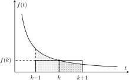
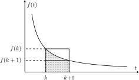

2 Séries numériques
2.1 Convergence d’une série numérique
2.1.1 Définitions
Définition 2.1 Soit \((u_n)_{n\geqslant n_0}\) une suite de \(\mathbb{K}\). On appelle série de terme général \(u_n\), \(n\geqslant n_0\), et on note \(\displaystyle \sum_{n\geqslant n_0}u_n\) la suite \((S_n)_{n\geqslant n_0}\) des sommes partielles définies par
\[ \forall n\geqslant n_0,\quad S_n = \sum_{k=n_0}^{n}u_k. \]
On dit que la série \(\displaystyle \sum_{n\geqslant n_0}u_n\) converge si la suite de ses sommes partielles \((S_n)_{n\geqslant n_0}\) admet une limite finie. On note alors
\[ \sum_{n=n_0}^{+\infty}u_n = \lim_{n\to +\infty} \sum_{k=n_0}^{n}u_k. \]
Le scalaire \(\displaystyle \sum_{n=n_0}^{+\infty}u_n\) s’appelle la somme de la série \(\displaystyle\sum_{n\geqslant n_0}u_n\).
Dans le cas contraire, on dit que la série \(\displaystyle\sum_{n\geqslant n_0}u_n\) diverge. La convergence ou la divergence d’une série s’appelle sa nature.
Exemple 2.1 La série de terme général \((\frac{1}{2^{n}})_{n \geqslant 0}\) est convergente et sa somme vaut \(1\).
Soit \(n \geqslant 1\). On a
\[ \sum_{k=0}^{n} \frac{1}{2^{k}} = \frac{1-1/2^{n+1}}{1-1/2} \underset{n \to + \infty}{\longrightarrow} =2. \]
Donc la série de terme général \((1/2^{n})_{n\in \mathbb{N}}\) converge et \(\sum_{n=0}^{+\infty}\frac{1}{2^{n}}=2\).
Exemple 2.2 La série de terme général \((n)_{n \in \mathbb{N}}\) diverge.
Pour \(n \geqslant 0\), on a
\[ \sum_{k=0}^{n} k = \frac{n(n+1)}{2} \to +\infty \quad \text{quand $n \to +\infty$}. \]
Donc la série de terme général \((n)_{n \in \mathbb{N}}\) diverge.
Comme pour les intégrales, on dispose d’une relation de Chasle pour les séries numériques.
Proposition 2.1 (Relation de Chasles) Soit \((u_n)_{n\geqslant n_0}\) une suite de \(\mathbb{K}\). Alors pour tout \(m\geqslant n_0\), les séries \(\sum_{n\geqslant n_0}u_n\) et \(\sum_{n\geqslant m}u_n\) ont même nature et, en cas de convergence, on a
\[ \sum_{n=n_0}^{+\infty} u_n = \sum_{n=n_0}^{m} u_n + \sum_{n=m_0+1}^{+\infty} u_n. \]
On résume le résultat précédent en disant que la nature d’une série ne dépend pas de ses premiers termes. Ainsi, tant qu’on ne parle que la nature d’une série, on peut se contenter de la noter \(\sum u_n\), sans préciser son point de départ.
Dans le cas des séries, il existe un lien simple entre le terme général et les sommes partielles, qui s’obtient par telescopage1:
\[ \forall n > n_{0},\ u_{n} = \sum_{k=n_{0}}^{n} - \sum_{k=n_{0}}^{n-1}. \]
Cette égalité mène la condition nécessaire de convergence suivante.
Proposition 2.2 (Une condition nécessaire de convergence) Le terme général d’une série convergente tend nécessairement vers \(0\).
La réciproque est fausse ; ce n’est pas parce que le terme général d’un série tend vers \(0\) que celle-ci converge.
On montrera par exemple que la série harmonique \(\sum \frac{1}{n}\) diverge, bien que \(\frac{1}{n}\) tende vers \(0\).
Définition 2.2 On dit que qu’une série est grossièrement divergente si son terme général ne tend pas vers \(0\).
Exemple 2.3 La série \(\sum n\) étudiée dans l’Exemple 2.2 est grossièrement divergente (le calcul explicite de ses sommes partielles n’est donc même pas nécessaire).
Sauf exception – essentiellement dans le cas des séries géométriques et des séries télescopiques – il n’est pas possible de calculer explicitement les sommes partielles d’une série (on ne dispose même de la notion de primitive utilisée en calcul intégrale). Il est donc tout aussi nécessaire de développer des théorèmes de comparaison pour les séries; c’est l’objectif de la Section 2.2.
On peut néanmoins facilement approximer la somme d’une série convergente via ses sommes partielles qui, elles, sont calculables (au moins numériquement). La différence entre la somme totale et une somme partielle porte le nom de reste. Cette notion de sens que pour les séries convergentes.
Définition 2.3 Soit \(\sum_{n\geqslant n_0} u_n\) une série convergente, de somme \(S\). Pour tout \(n \geqslant n_{0}\), on appelle reste d’ordre \(n\) de la série \(\sum_{n\geqslant n_0}u_n\) la quantité
\[ R_n = S - S_n = \sum_{k=n+1}^{+\infty}u_k. \]
Proposition 2.3 Le reste d’une série convergente tend vers \(0\).
Exemple 2.4 On a vu que la série \(\sum_{n \geqslant 0}\frac{1}{2^{n}}\) était convergente. Pour tout \(n \geqslant 0\), son reste d’ordre \(n\) est donné par
\[ \begin{aligned} R_{n} & = 2 - \sum_{k=0}^{n}\frac{1}{2^{k}}\\ & = 2 - 2\left(1 - \frac{1}{2^{n+1}}\right)\\ & = \frac{1}{2^{n}} \to 0. \end{aligned} \]
Le reste \(R_{n}\) représente l’erreur algébrique (i.e. avec signe) commise en approximant \(S\) par \(S_n\). Il est donc intéressant de majorer \(R_{n}\), à défault d’être capable de le calculer explicitement (les séries alternées sont remarquables sur ce point).
2.1.2 Calculer avec des séries convergentes
On s’intéresse maintenant aux propriétés qui permettent de calculer avec des séries convergentes. Comme pour les intégrales généralisées, ce sont les mêmes que celles de la somme usuelle, sous réserve de convergence.
Proposition 2.4 (Propriétés de la somme) On suppose que les séries \(\sum_{n \geqslant n_{0}} u_{n}\) et \(\sum_{n \geqslant n_{0}} v_n\) convergent. Alors
pour tout \(\lambda \in \mathbb{K}\), la série \(\sum (u_{n}+\lambda v_{n})\) converge et
\[ \sum_{k=n_{0}}^{+\infty} (u_{n}+ \lambda v_{n}) = \sum_{k=n_{0}}^{+\infty} u_{n} + \lambda\sum_{k=n_{0}}^{+\infty} v_{n},\quad \textit{(linéarité de la somme)} \]
si \(\mathbb{K}=\mathbb{R}\) et si
\[ \forall n \geqslant n_{0},\quad u_{n}\leqslant v_{n}, \] alors
\[ \sum_{k=n_{0}}^{+\infty} u_{n} \leqslant\sum_{k=n_{0}}^{+\infty} v_{n},\quad \textit{(croissance de la somme)} \] 3. la relation de Chasles est satisfaite pour les séries convergentes.
2.1.3 Séries géométriques et séries télescopiques
Dans cette section, on étudie deux types de séries très importantes pour lesquelles on est capable de calculer explicitement les sommes partielles et la somme en cas de convergence.
Définition 2.4 On appelle série géométrique de raison \(q \in \mathbb{K}\) la série de terme général \(q^{n}\).
Exemple 2.5 La série \(\sum \frac{1}{2^{n}}\) est une série géométrique de raison \(\frac{1}{2}\).
Les séries exponentielles sont englobées dans les séries géométriques.
Exemple 2.6 Pour tout \(\alpha \in \mathbb{R}\), la série \(\sum e^{-\alpha n}\) est une série géométrique de raison \(e^{-\alpha}\).
Proposition 2.5 Soit \(q \in \mathbb{K}\). Alors
- si \(q \neq 1\), on a
\[ \forall n \geqslant 0,\ \sum_{k=0}^{n}q^{k} = \frac{1-q^{n+1}}{1-q}, \]
- la série \(\sum q^{n}\) converge ssi \(|q|<1\) et, dans ce cas,
\[ \sum_{n=0}^{+\infty} q^{n} = \frac{1}{1-q}. \]
Remarque 2.1. Le cas \(q=1\) est simple ; la série est grossièrement divergente et \[ \forall n \in \mathbb{N},\quad \sum_{k=0}^{n}q^{k} = \sum_{k=0}^{n}1 = n+1. \]
On retrouve tous les autres résultats relatifs aux séries géométriques dont le premier terme n’est pas égal à \(q^{0}=1\) en mettant en facteur par le premier terme de la somme.
Exemple 2.7 Si \(q \neq 1\), on a
\[ \forall n \geqslant 1,\quad \sum_{k=1}^{n}q^{k} = q \sum_{k=0}^{n-1}q^{k} = q \frac{1-q^{n}}{1-q}. \]
Plus généralement, pour tout \(n \geqslant m\), on a \[ \begin{aligned} \sum_{k=m}^{n}q^{k} = q^{m} \sum_{k=0}^{n-m}q^{k} = q^{m}\frac{1-q^{n-m}}{1-q}. \end{aligned} \]
Cette technique permet aussi de calculer explicitement les restes des séries géométriques convergentes:
Exemple 2.8 Soit \(q \in \mathbb{K}\) avec \(|q|<1\). Alors
\[ \forall n \geqslant 0, \sum_{k=n+1}^{+\infty} q^{k} = q^{n+1}\sum_{k=0}^{+\infty} q^{k} = \frac{q^{n+1}}{1-q}. \]
Les deux exemples précédents ne sont pas à connaître par coeur, mais il faut être capable de les retrouver très rapidement.
Exemple 2.9 Nature de la série \(\sum e^{-\alpha n}\) pour \(\alpha \in \mathbb{R}\).
Il s’agit d’une série géométrique de raison \(e^{-\alpha}\). Celle si converge ssi \(|e^{-\alpha}| = e^{-\alpha}<1\) i.e. \(\alpha>0\).
Dans ce cas, on a d’ailleurs
\[ \sum_{n=0}^{+\infty}e^{-\alpha n}= \frac{1}{1- \alpha}. \]
Les séries telescopiques sont un autre exemple – fréquent en pratique – de séries dont on sait calculer les sommes parielles.
Définition 2.5 Une série telescopique est une série de la forme \(\sum (u_{n+1}-u_n)\), où \((u_{n})\) est une suite de \(\mathbb{K}\).
Théorème 2.1 La série telescopique \(\sum (u_{n+1}-u_{n})\) converge ssi la suite \((u_{n})_{n \in \mathbb{N}}\) converge.
Remarque 2.2. Ce théorème est un nouvel outil pour étudier la convergence d’une suite: pour montrer qu’une suite converge, on pourra s’intéresser à la série de ses différences. C’est une approche souvent très fructueuse car on dispose de théorèmes efficaces pour montrer la convergence d’une série.
Exemple 2.10 Convergence et somme de la série \(\sum_{n\geqslant 1}\frac{1}{n(n+1)}\).
On remarque que
\[ \forall n \in \mathbb{N}^{*},\ \frac{1}{n(n+1)} = \frac{1}{n}-\frac{1}{n+1}. \]
La série \(\sum_{n \geqslant 1}\frac{1}{n(n+1)}\) est donc une série télescopique, qui converge car \(\frac{1}{n+1}\) converge lorsque \(n \to +\infty\). De plus, par telescopage,
\[ \forall n \geqslant 1,\ \sum_{k=0}^{n}\frac{1}{k(k+1)} = \frac{1}{n+1}- 1 \to 1 \quad \text{quand $n \to +\infty$.} \]
Donc \(\displaystyle\sum_{n=1}^{+\infty}\frac{1}{n(n+1)}=1\).
On peut voir dans l’égalité
\[ \sum_{k=0}^{n} (u_{k+1}-u_{k}) = u_{n+1}-u_0 \]
un cas particulier discret du théorème fondamentale de l’analyse qui affirme que si \(f\) est une fonction de classe \(C^{1}\) sur \([a,b]\), alors
\[ \int_{a}^{b}f'(t)dt = f(b)-f(a), \]
la différence \(u_{n+1}-u_{n}\) jouant le rôle de la dérivée de \(f\) ; dans les deux cas, le calcul de la somme partielle est immédiat !
On reverra ce type d’analogie en TD avec la transformation d’Abel, qui est aux sommes ce que l’intégration par parties est aux intégrales.
2.2 Séries à termes positifs
Dans cette section, on démontre le théorème de comparaison pour les séries à termes positifs. De même que dans le cas des intégrales, ce théorème permettra de démontrer la convergence d’une série sans avoir à calculer explicitement ses sommes partielles.
A noter une différence importante avec les intégrales généralisées ; la notion d’intégrabilité n’est pas au programme pour les suites. Il faudra donc systématiquement se ramener à des séries positives ou au moins de signe constant au voisinage de \(+\infty\).
Comme pour les intégrales, le théorème de comparaison que nous allons démontrer repose sur le théorème de la limite monotone, via le Lemme 2.1.
Définition 2.6 On dit qu’une série est à termes positifs si son terme général est positif ou nul.
Lemme 2.1 Si la serie \(\sum u_{n}\) est à termes positifs, la suite de ses sommes partielles est croissante. La série \(\sum u_{n}\) est donc convergente ssi ses sommes partielles sont majorées.
Théorème 2.2 (Comparaison des séries à termes positifs) Soient \(\sum u_{n}\) et \(\sum v_{n}\) deux séries à termes positifs. Alors
- si \(u_{n} \leqslant Av_{n}\) avec \(A \geqslant 0\), et si la série \(\sum v_{n}\) converge, alors \(\sum u_{n}\) converge,
- si \(u_{n}=o(v_{n})\) et si \(\sum v_{n}\) converge, alors \(\sum u_{n}\) converge,
- si \(u_{n} \sim v_{n}\), alors les séries \(\sum u_{n}\) et \(\sum v_{n}\) ont même nature.
Remarque 2.3. Puisque la nature d’une série ne dépend pas de ses premiers termes, il suffit que les hypothèses du théorème soient satisfaites pour \(n\) assez grand.
Rappelons à cette occasion que les équivalents préseservent les signes . Ainsi, si \(u_{n} \sim v_{n}\) et si \(u_{n} \geqslant 0\) pour \(n\) assez grand, alors \(v_{n}\) sera également positive ou nulle au voisinage de \(+\infty\).
Dans le cas de la relation \(\sim\), on peut remplacer l’hypothèse de positivité par l’hypothèse plus faible : \(u_{n}\) (ou \(v_{n}\)) est de signe constant au voisinage de \(+\infty\).
Exemple 2.11 Nature de la série \(\sum \ln \left(1+\frac{1}{2^{n}}\right)\).
Puisque \(\frac{1}{2^{n}}\to 0\) quand \(n \to +\infty\), on a
\[ \ln \left(1+\frac{1}{2^{n}}\right) \sim \frac{1}{2^{n}} \geqslant 0. \]
De plus, la série \(\sum \frac{1}{2^{n}}\) est une série géométrique convergente car \(\left|\frac{1}{2}\right|<1\).
Donc par comparaison, la série \(\sum \ln\frac{1}{2^{n}}\) converge.
Le théorème de comparaison est faux si les séries ne sont pas à terme positifs (ou au moins de signe constant au voisinage de \(+\infty\) pour la relation \(\sim\)). Des exemples seront vus en TD.
Pour pouvoir appliquer efficacement les théorèmes de comparaison, il faut un certain nombre de séries de référence. Les séries géométriques et télescopiques ne permettent pas de couvrir suffisamment de cas en pratique; il faut pouvoir dire quelque chose de la nature des séries de Riemann de la forme \(\sum \frac{1}{n^\alpha}\).
Contrairement au cas des intégrales, on ne peux pas calculer explicitement les sommes partielles de ces séries. On se ramène au cas des intégrales de Riemann via le résultat suivant.
Théorème 2.3 Si \(f:[n_0,+\infty[\to \mathbb{R}\) est une fonction positive, continue et décroissante, alors la série \(\displaystyle \sum_{n\geqslant n_0} f(n)\) et l’intégrale \(\int_{n_0}^{+\infty}f(t)dt\) ont même nature.
Le coeur de la démonstration repose sur l’encadrement \[ \forall k \geqslant n_{0}+1,\ \int_{k}^{k+1} f(t)dt \leqslant f(k) \leqslant \int_{k-1}^{k}f(t)dt, \]
ou, de manière équivalente,
\[ \forall k \geqslant n_{0},\ f(k) \leqslant \int_{k}^{k+1}f(t)dt \leqslant f(k+1). \]
Ces deux encadrements sont très clairs graphiquement (Figure 2.2).
Il faut être capable de les redémontrer rapidement en utilisant la monotonie de la fonction \(f\), et de les adapter au cas d’une fonction croissante.
C’est une technique usuelle et très efficace pour étudier les restes des séries convergentes, ou les sommes partielles des séries divergentes. De nombreux exemples seront vus en TD.


Proposition 2.6 (Séries de Riemann) Soit \(\alpha \in \mathbb{R}\). Alors la série \(\sum \frac{1}{n^{\alpha}}\) converge ssi \(\alpha>1\).
Exemple 2.12 La série harmonique \(\sum \frac{1}{n}\) diverge, mais la série \(\sum \frac{1}{n^{2}}\) converge.
Comme pour le théorème de comparaison de fonctions positives, les théorèmes de comparaison pour les séries à termes positifs restent incapables de traiter les séries à termes complexes, ou les séries dont le terme général n’est pas de signe constant au voisinage de \(+\infty\).
Le remède est le même que pour les intégrales; les séries absolument convergentes.
Définition 2.7 On dit que la série \(\sum u_{n}\) est absolument convergente si a série \(\sum |u_{n}|\) converge.
Proposition 2.7 Si une série est absolument convergente, elle est convergente.
Ce résultat, combiné au théorème de comparaison de séries à termes positifs, permet de résoudre la plupart des cas rencontrés en pratique.
Exemple 2.13 Nature de la série \(\sum \frac{\cos n}{n^{2}}\).
On a
\[ \forall n \geqslant 1,\ \left|\frac{\cos n}{n^{2}}\right| \leqslant \frac{1}{n^{2}}. \]
De plus, la série \(\sum \frac{1}{n^{2}}\) est une série de Riemann convergente. Donc par comparaison de séries à termes positifs, la série \(\sum \frac{\cos n}{n^{2}}\) converge absoluement, donc converge.
Remarque 2.4. Contrairement au cas des fonctions, on ne dispose pas en TSI de la notion de suite intégrable. La situation est donc comparativement plus simple ; on se ramenera systématiquement à la notion d’absolue convergence, avec un seul théorème de comparaison.
2.3 Autres résultats de convergence
Les deux résultats présentés dans cette section sont propres aux séries. Le premier sera surtout utilisé dans le chapitre sur les séries entières. Le second permet d’étudier les séries dont le signe du terme général alterne. Il est surtout intéressant pour l’encadrement explicite qu’il fournit de la somme à l’aide de ses sommes partielles d’indices pairs et impairs.
2.3.1 Le critère de d’Alembert
Le critère de d’Alembert s’applique aux séries \(\sum u_{n}\) à termes strictement positifs. Si ce n’est pas le cas, on peut toujours envisager de l’appliquer à la série \(\sum |u_{n}|\). Il est particulièrement adapté aux séries dont le terme général s’exprime à l’aide de quotients et de produits.
Théorème 2.4 (Critère de d’Alembert) Soit \((u_{n})\) une suite de réels strictement positifs. On suppose que le quotient \(\frac{u_{n+1}}{u_{n}}\) tend vers une limite finie \(\lambda \geqslant 0\). Alors
- si \(\lambda > 1\), la série \(\sum u_{n}\) diverge grossièrement,
- si \(0 \leqslant \lambda < 1\), la série \(\sum u_{n}\) converge,
- si \(\lambda = 1\), le critère de d’Alembert ne permet pas de conclure.
Exemple 2.14 Nature de la série \(\sum \frac{n^{n}}{n!}\).
Posons, pour tout \(n \in \mathbb{N}\), \(u_{n}=\frac{n^{n}}{n!}\). On a alors \(u_{n}>0\) et
\[ \begin{aligned} \forall n \in \mathbb{N},\ \frac{u_{n+1}}{u_{n}} & = \frac{1}{n+1}\frac{(n+1)^{n+1}}{n^{n}}\\ & = \left(1+\frac{1}{n}\right)^{n}. \end{aligned} \]
En passant sous forme exponentielle, on a par ailleurs
\[ \left(1+\frac{1}{n}\right)^{n}=e^{n \ln \left(1+\frac{1}{n}\right)}=e^{1+o(1)} \to e>1. \]
Donc la série \(\sum \frac{n^{n}}{n!}\) est grossièrement divergente.
2.3.2 Critère des séries alternées
Le critère des séries alternées permet d’étudier les séries dont le signe du terme général alterne, d’où sont nom. Plus que le résultat de convergence, il faut retenir l’encadrement de la somme par ses sommes partielles en cas de convergence.
Théorème 2.5 (Critère des séries alternées) Soit \((u_{n})\) une suite réelle monotone de limite nulle. Alors la série \(\sum (-1)^{n}u_{n}\) converge et sa somme \(S\) est encadrée par les sommes partielles d’indices pairs et impairs, qui forment deux suites adjacentes. En particulier, le reste \(R_{n}\) de la série \(\sum (-1)^{n} u_{n}\) est du signe de son premier terme, et \(|R_{n}|\leqslant |u_{n+1}|\).
Exemple 2.15 Montrer que la série \(\sum_{n \geqslant 0} \frac{(-1)^{n}}{n+1}\) converge et donner une approximation à \(10^{-3}\) près de sa somme.
Le critère des séries alternées s’applique car \(\frac{1}{n+1}\) tend vers \(0\) en décroissant. La série \(\sum \frac{(-1)^{n}}{n+1}\) est donc convergente. De plus \(R_{999}\) est positif et
\[ 0 \leqslant R_{999} \leqslant \frac{1}{1000}. \]
Donc \(S_{999}\) est une approximation à \(10^{-3}\) près par défaut de \(S\).
On obtient numériquement
\[ S_{999} = 0.6926... \]
Donc une approximation2 à \(10^{-3}\) près de \(S\) est \(0,693\) (on a arrondit par excès pour se rapprocher de \(S\)).
Exercices
2.3.3 Convergence d’une série numérique
Exercice 2.1 (Une série grossièrement divergente). Montrer que la série \(\sum \left(1 - \frac{1}{n}\right)^n\) est grossièrement divergente.
Exercice 2.2 (Série harmonique).
Soit \(k\geqslant 2\). Montrer que
\[ \int_k^{k+1} \frac{dt}{t}\leqslant \frac{1}{k} \leqslant \int_{k-1}^k \frac{dt}{t}. \]
En déduire que \(\displaystyle \sum_{k=1}^n\frac{1}{k}\underset{+\infty}{\sim} \ln(n)\).
En déduire la nature de la série \(\sum \dfrac{1}{n}\).
Exercice 2.3 (Noyau de Poisson). Soit \(r\in]0,1[\) et \(\theta\in \mathbb{R}\).
Montrer que la série \(\sum_{n\geqslant 0} r^ne^{in\theta}\) converge et, déterminer la valeur de sa somme.
En déduire que la série de terme général \(r^n\cos(n\theta)\) converge et, que l’on a \[\sum_{n=0}^{+\infty}r^n\cos(n\theta) = \frac{1-r\cos(\theta)}{1-2r\cos(\theta)+r^2}.\]
Exercice 2.4 (\(\star\)) (Noyau de Dirichlet). Pour tout \(n\in\mathbb{N}^*\) et \(x\in\mathbb{R}\), on pose
\[ D_n(x) = \sum_{k=-n}^ne^{ikx}. \]
Montrer que \(D_n(x) = 1 + 2\sum_{k=1}^n\cos(kx)\).
Montrer que \[D_n(x) =\left\{ \begin{array}{cc} \dfrac{\sin\left(\left(n+\frac{1}{2}\right)x\right)}{\sin\left(\frac{x}{2}\right)} &\text{si $x\notin 2\pi\mathbb{Z}$}, \\ 2n+1& \text{si $x\in 2\pi\mathbb{Z}$.} \end{array} \right.\]
Montrer que \(D_n\) est \(2\pi\)-périodique et de classe \(C^\infty\) sur \(\mathbb{R}\).
2.3.4 Séries à termes positifs
Exercice 2.5 (Comparaison). Déterminer la nature des séries de terme général
\[ \begin{array}{ll} a_n = \frac{n+3}{2(n+1)(n^2-3)}, & b_n = \sin\left(\frac{1}{n}\right) - \ln\left(1+\frac{1}{n}\right),\\ c_n = \left(\frac{n}{n+1}\right)^{n^2}, & d_n =ne^{-n},\\ e_n =\frac{\ln(n)}{n^2}, & f_{n}=\frac{(-1)^{n}}{2n^{2}+1}. \end{array} \]
Exercice 2.6 (Une comparaison série-intégrale). En utilisant le théorème de comparaison série/intégrale, déterminer la nature de la série \(\sum_{n>1}\frac{1}{n\ln(n)^2}\).
Exercice 2.7 (Equivalent d’une somme partielle). Déterminer un équivalent de \(\sum_{k=1}^n\sqrt{k}\) quand \(n\to +\infty\).
Exercice 2.8 (\(\star\)) (Divergence de l’intégrale de Dirichlet).
Montrer que \[\forall n\geqslant 2,\quad \int_{\pi}^{n\pi}\frac{|\sin(t)|}{t}dt\geqslant \sum_{k=2}^n\frac{1}{k\pi}\int_{(k-1)\pi}^{k\pi}|\sin(t)|dt.\]
Montrer que \[\forall k\geqslant 2,\ \int_{(k-1)\pi}^{k\pi}|\sin(t)|dt = 2.\]
En déduire que \(\displaystyle\int_{1}^{+\infty}\dfrac{|\sin(t)|}{t}dt\) diverge.
Exercice 2.9 (\(\star\)) (Reste des séries de Riemann). Soit \(\alpha >1\).
Pour tout \(k\geqslant 2\), montrer que \[\int_{k}^{k+1}\frac{dt}{t^\alpha}\leqslant\frac{1}{k^\alpha}\leqslant\int_{k-1}^k\frac{dt}{t^\alpha}.\]
En déduire un équivalent du reste \(\displaystyle R_n=\sum_{k=n+1}^{+\infty}\frac{1}{k^{\alpha}}\) de la serie \(\displaystyle\sum \frac{1}{n^\alpha}\).
La série de terme général \(R_n\) est elle convergente ? (On distinguera suivant les valeurs de \(\alpha\)).
Exercice 2.10 (Développement asymptotique de la série harmonique). Pour \(n\geqslant 1\), on pose \[\Delta_n = \sum_{k=1}^n \frac{1}{k} - \ln(n).\]
Déterminer un équivalent de \(\Delta_{n+1} - \Delta_n\) lorsque \(n\to +\infty\).
En déduire que la suite \((\Delta_n)\) converge vers une constante \(\gamma\) que l’on ne cherchera pas à déterminer3.
Montrer que \(\sum_{k=1}^n\frac{1}{k} = \ln(n) + \gamma + o(1)\).
2.3.5 Autres résultats de convergence
Exercice 2.21 (Critère de d’Alembert). Etudier la nature de la série \(\displaystyle\sum = \frac{(1+i)^n}{n!}\).
Exercice 2.11 (Critère de d’Alembert). Discuter, selon la nature de \(a\), de la nature de la série de terme général \(u_n= \frac{n!}{n^{an}}\), \(a\in\mathbb{R}\).
Exercice 2.12 (Série harmonique alternée).
Justifier que la série \(\sum \frac{(-1)^{n-1}}{n}\) converge.
Montrer que pour tout \(x\neq -1\) et \(n\geqslant 1\) on a \[\sum_{k=0}^{n-1}(-1)^kx^k = \frac{1 - (-1)^nx^n}{1+x}.\]
En déduire que \(\displaystyle\sum_{k=1}^n \frac{(-1)^{k-1}}{k}=\int_0^1 \frac{1-(-1)^nx^n}{1+x}dx\).
Montrer que, pour tout \(n\in\mathbb{N}\), \[0\leqslant \int_0^1\frac{x^n}{1+x}dx\leqslant \frac{1}{n+1}.\]
En déduire que \(\displaystyle\int_0^1\frac{x^n}{1+x}dx\) tend vers \(0\) quand \(n\to +\infty\).
En déduire \(\sum_{n=1}^{+\infty}\frac{(-1)^{n-1}}{n}\).
Exercice 2.20 (Critère des séries alternées). Pour tout \(n\geqslant 1\), on pose \[u_n = \frac{(-1)^n}{(n!)^{1/n}}\quad \text{et}\quad a_n = \ln((n!)^{1/n}).\]
Exercice 2.19 (\(\star\)) Pour tout \(n\in\mathbb{N}\), on pose \[u_n = \frac{(2n)!}{(n!)^22^{2n}}.\]
Le critère de d’Alembert permet-il ici de conclure ?
Montrer que \[\frac{u_{n+1}}{u_n} = 1 - \frac{1}{2n} + \frac{1}{2n^2} + o\left(\frac{1}{n^2}\right)\]
Déterminer \(\lambda\in\mathbb{R}\) tel que \(\dfrac{(n+1)^{\lambda}u_{n+1}}{n^\lambda u_{n}} = 1 + \frac{1}{8n^2} + o\left(\frac{1}{n^2}\right)\).
Montrer que la série \(\displaystyle \sum \ln\left(\frac{(n+1)^{\lambda}u_{n+1}}{n^\lambda u_{n}}\right)\) converge.
En déduire que la suite \(n^\lambda u_n\) converge vers une constante \(C>0\) et conclure quand à la nature de la série \(\sum u_n\).
Exercice 2.13 (Une série alternée).
Montrer que \(\displaystyle a_n \geqslant\frac{1}{n}\int_1^n \ln(x)dx\) et en déduire la limite de la suite \((u_n)\).
Soit \((x_n)_{n\geqslant 1}\) une suite croissante. Montrer que \[\frac{1}{n}\sum_{k=1}^n x_k \leqslant \frac{1}{n+1}\sum_{k=1}^{n+1}x_k\] On pourra poser \(m_n = \frac{1}{n}\sum_{k=1}^{n}x_k\).
En déduire que la suite \((a_n)_{n\geqslant 1}\) est croissante.
En déduire la nature de la série \(\sum u_n\).
Exercice 2.14 (Fonction \(eta\) de Dirichlet). Pour \(x>0\) on pose
\[ \eta(x) = \sum_{n=1}^{+\infty}\frac{(-1)^{n-1}}{n^x}. \]
Montrer que la fonction \(\eta\) est bien définie.
Montrer que \[\forall x>0,\ 1-\frac{1}{2^x}\leqslant\eta(x)\leqslant 1\]
En déduire la limite de \(\eta\) en \(+\infty\).
Exercice 2.15 (Un contre exemple).
Montrer que la série \(\sum \frac{(-1)^n}{\sqrt{n}}\) converge.
Montrer que \(\frac{(-1)^n}{\sqrt{n}} + 1/n\sim \frac{(-1)^n}{\sqrt{n}}\).
Quelle est la nature de la série \(\sum \left(\frac{(-1)^n}{\sqrt{n}}+\frac{1}{n}\right)\) ?
2.3.6 Divers
Exercice 2.16 (\(\star\)) (Cas d’ambiguité dans le critère de d’Alembert). Pour tout \(n\in\mathbb{N}\), on pose \[u_n = \frac{(2n)!}{(n!)^22^{2n}}.\]
Le critère de d’Alembert permet-il ici de conclure ?
Montrer que \[\frac{u_{n+1}}{u_n} = 1 - \frac{1}{2n} + \frac{1}{2n^2} + o\left(\frac{1}{n^2}\right)\]
Déterminer \(\lambda\in\mathbb{R}\) tel que \(\dfrac{(n+1)^{\lambda}u_{n+1}}{n^\lambda u_{n}} = 1 + \frac{1}{8n^2} + o\left(\frac{1}{n^2}\right)\).
Montrer que la série \(\displaystyle \sum \ln\left(\frac{(n+1)^{\lambda}u_{n+1}}{n^\lambda u_{n}}\right)\) converge.
En déduire que la suite \(n^\lambda u_n\) converge vers une constante \(C>0\) et conclure quand à la nature de la série \(\sum u_n\).
Exercice 2.17 (\(\star\)) (Un critère de convergence). Soient \(0<a<b\) deux réels. On considère une suite \((u_n)_{n\in\mathbb{N}}\) de réels strictement positifs tels que
\[ \forall n\in\mathbb{N},\ \frac{u_{n+1}}{u_n} = \frac{n+a}{n+b}. \]
Montrer que la série de terme général \(\ln\left(\frac{u_{n+1}}{u_n}\right)\) diverge.
En déduire que la suite \((u_n)_{n\in\mathbb{N}}\) converge vers \(0\).
On suppose que \(b\leqslant a+1\).
Montrer que \(u_n\geqslant \frac{au_0}{n+a}\).
En déduire la nature de la série \(\sum u_n\).
On suppose que \(b>a+1\).
Montrer que \((b-a-1)\sum_{k=0}^n u_k = (b-1)u_0 - (n+a)u_n\).
Montrer que la suite \(((n+a)u_n)_{n\in\mathbb{N}}\) est décroissante.
En déduire la nature de la série \(\sum u_n\) et calculer sa somme.
Étudier le cas \(u_n = \int_0^{\pi/2}\cos^{2n}(t)dt\).
Exercice 2.18 (\(\star\)) (Transformation d’Abel). Soient \((a_n)_{n\in\mathbb{N}}\) et \((b_n)_{n\in\mathbb{N}}\) deux suites de \(\mathbb{K}\). On pose
\[ \forall n\in\mathbb{N},\quad S_n = \sum_{k=0}^n a_kb_k,\quad B_n = \sum_{k=0}^n b_k. \]
Montrer que \[\forall n\in\mathbb{N}^*,\quad S_n = a_nB_n - \sum_{k=0}^{n-1}B_k(a_{k+1}-a_k).\]
On suppose que \(a_n\to 0\) quand \(n\to +\infty\), que \((B_n)\) est bornée et que la série \(\sum (a_{k+1}-a_k)\) est absolument convergente. Montrer alors que la série \(\sum a_nb_n\) converge.
Application : montrer que la série \(\displaystyle\sum_{n\geqslant 1} \dfrac{\sin n}{n}\) converge.